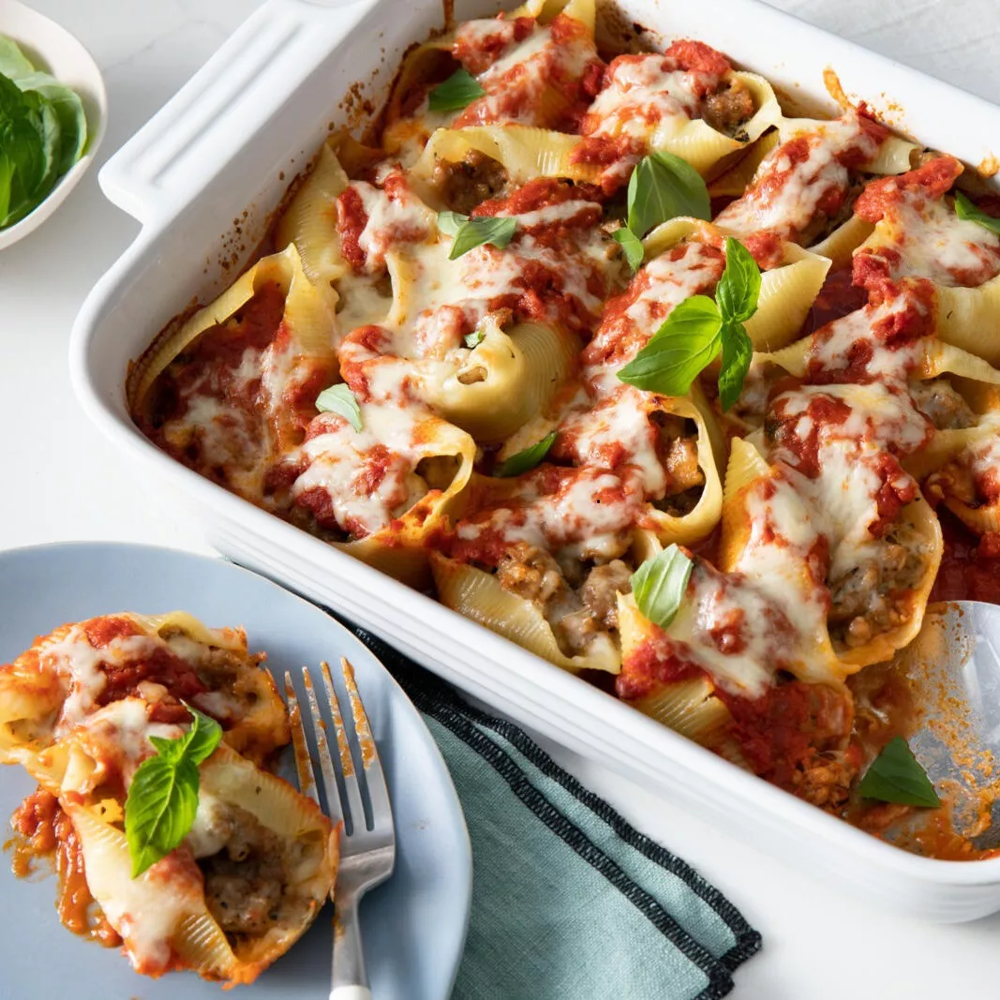

Lasagna with sausage is a delicious and hearty Italian dish that typically consists of layers of pasta, tomato sauce, cheese, and sausage. The sausage can be either sweet or spicy, depending on your preference, and is often crumbled and mixed into the tomato sauce.
The pasta used in lasagna sausage is typically long, wide strips of lasagna noodles, which are boiled until al dente and then layered with the tomato sauce and sausage mixture. The tomato sauce is usually made with crushed tomatoes, garlic, onions, and a variety of herbs and spices, such as oregano and basil, to give it a rich, savory flavor.